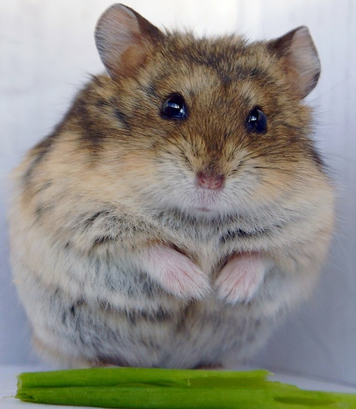
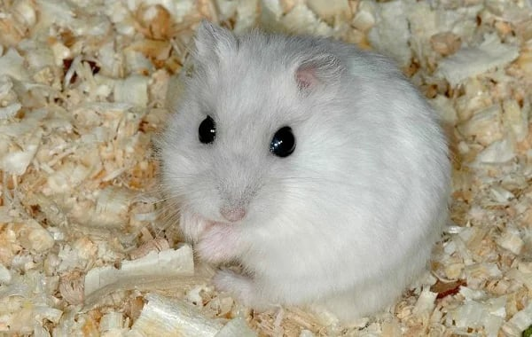
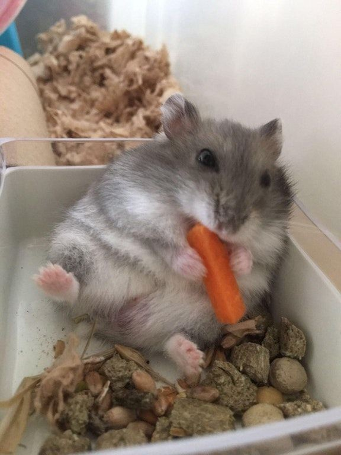
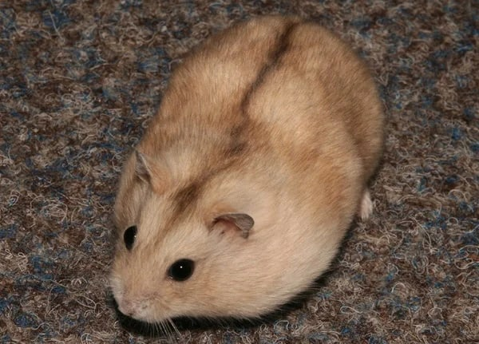

Джунгарские хомяки
Джунгарские хомяки – вид карликовых хомяков, которые очень популярны в Европе и Азии как домашние любимцы.
Внешний вид
Милые карликовые «меховые шарики» просты в содержании, обладают покладистым характером и выглядят красиво. У них светлое брюшко, а на спинке есть характерная темная полоска вдоль позвоночника. Окраска джунгариков:
- стандартная – коричнево-серый с белым брюшком;

- жемчуг – белый с вкраплениями серого;

- сапфир – серый с белым брюшком;

- мандарин – кремово-рыжий.

Длина до 10 см, вес 25—65 граммов, в дикой природе живут примерно 12 месяцев (1 год), в неволе живут 2 года, в среднем 1,8 года. Имеет покрытые шерстью ступни, тёмную полосу на спине (обычно серую), очень короткий хвост (часто его практически не видно, когда зверёк сидит). Мех отличается значительными белыми вкраплениями.
Среда обитания
Распространён в сухих степях и полупустынях юга Западной Сибири, Джунгарского Алатау, в Хакасии.
Питание
Закрепилось заблуждение, что джунгарские хомячки кормятся исключительно травянистыми растениями. На самом деле они практически всеядны. Питание – разнообразное. В дикой природе зверьки часто охотятся на насекомых (кузнечиков, саранчу, муравьев, гусениц, мотыльков, червяков).
Также животные поедают ягоды, молодые побеги деревьев, листву и корни растений, семена и зерна. В поисках корма эти маленькие зверьки способны проходить многие километры.
На зиму джунгарики любят делать запасы. Одна особь в силах накопить до 20 килограмм зерен и семян. А иногда хомячки прячут в своих норках до 90 кг. Хомякам нравится жить недалеко от домов людей, так в их меню появляются овощи из огородов. Но они быстро портятся, поэтому для пополнения запасов хомячки часто заходят в сараи в поисках зерна.
Как содержать в домашних услвиях джунгарского хомяка?